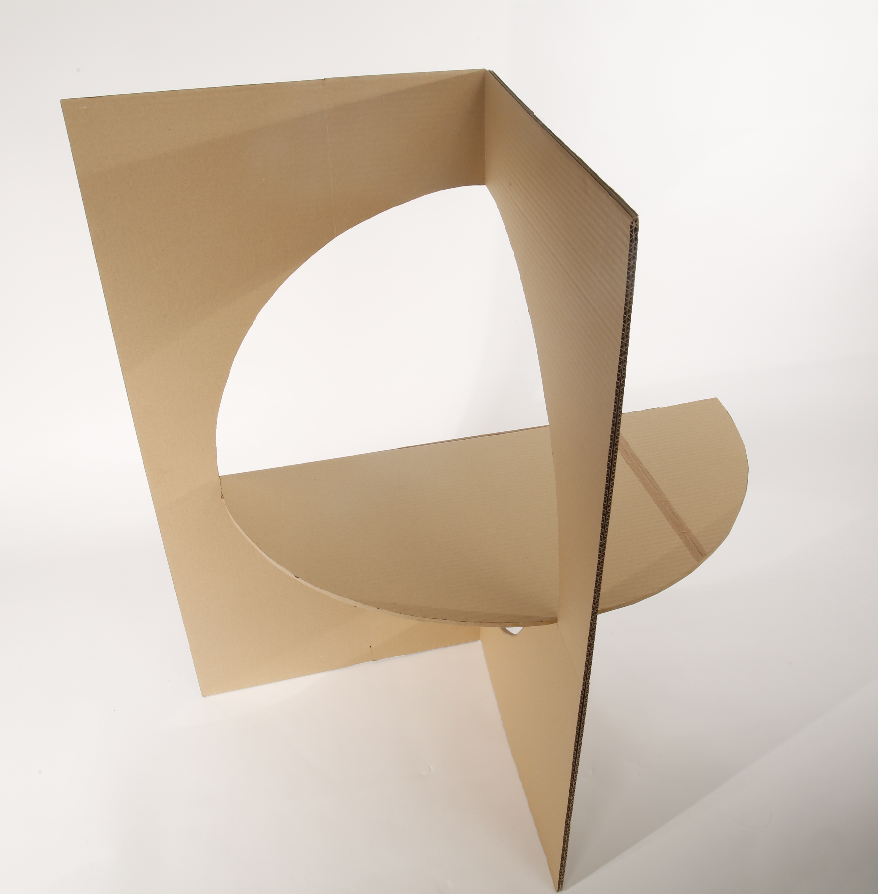
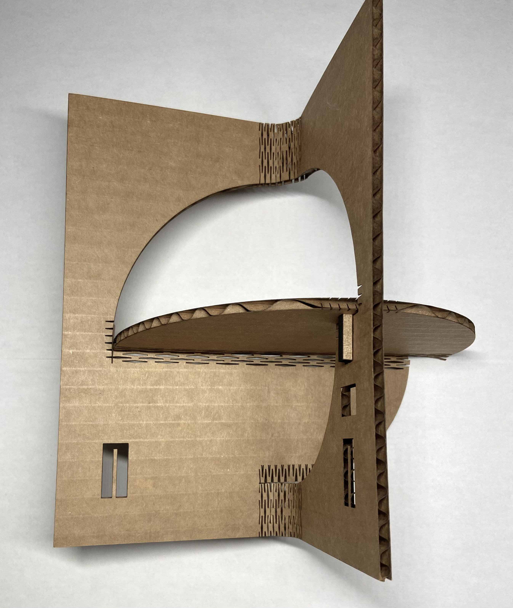
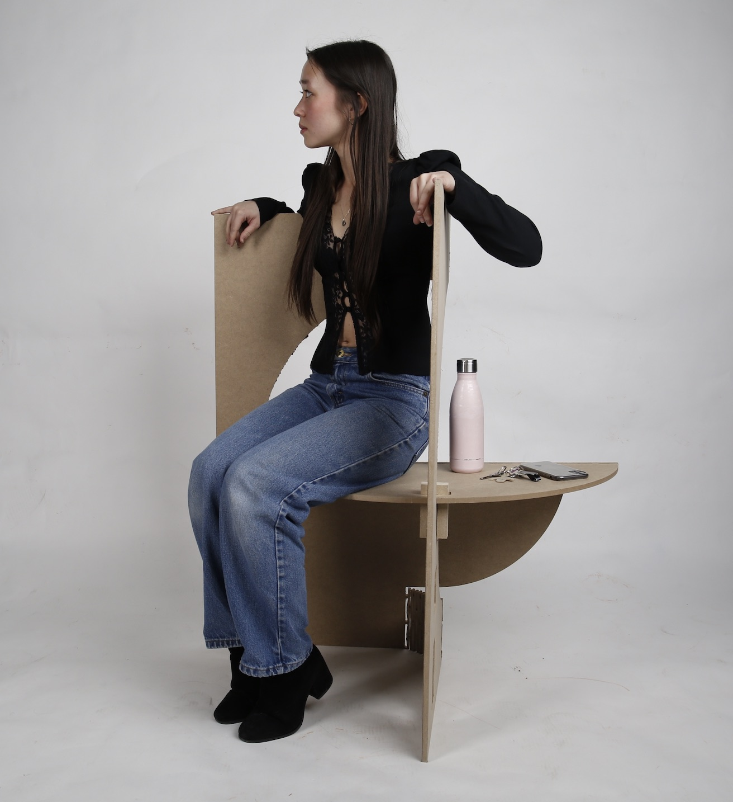
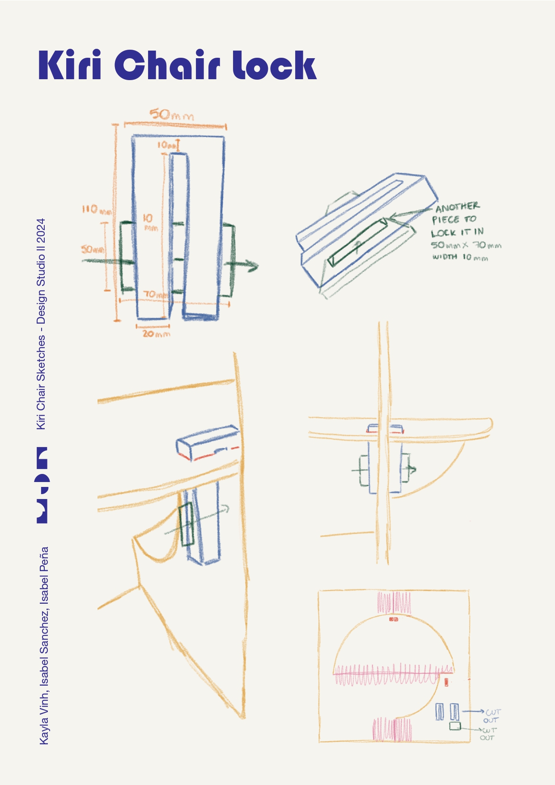
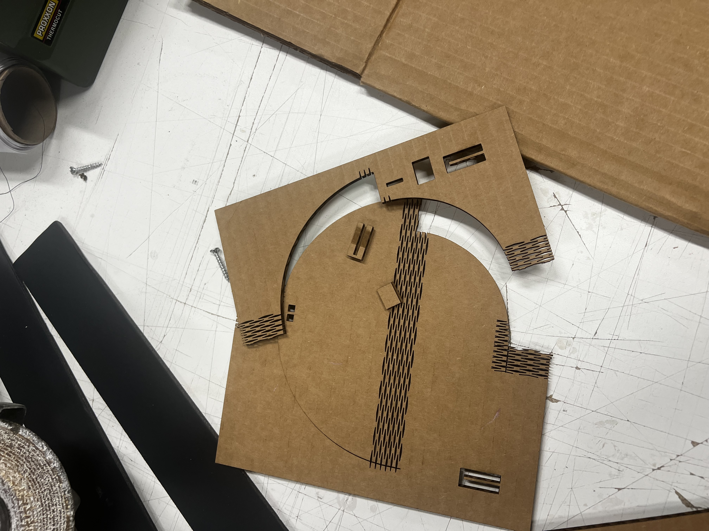
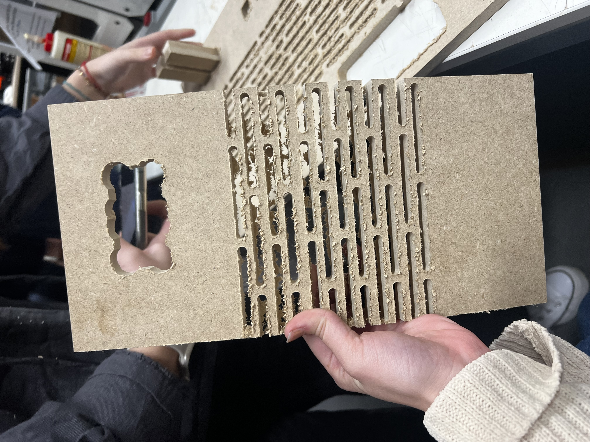
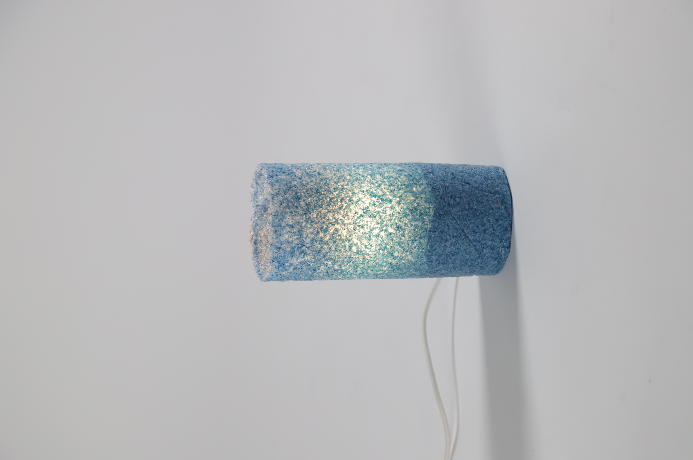

The KIRI Table
In collaberation with Isabel Peña and Isabel Sanchez.
The KIRI Table explores how recycled ocean plastic can be transformed into a desirable, functional object while preserving the story of its origin. Developed as part of Gravity Wave's initiative to repurpose ghost fishing nets into plastic panels, the project combines material experimentation with principles of circular design. Created in collaboration with Isabel Sanchez and Isabel Peña, the table uses kirigami-inspired folding techniques to reintroduce a sense of movement and fluidity into an otherwise rigid material, creating a piece that reflects its connection to the ocean.


Project Brief: Create value and media interest using recycled plastic panels produced from recovered ghost fishing nets.
Rather than focusing solely on creating a functional product, we became interested in understanding the material as both a physical resource and a storytelling medium. We wanted our outcome to communicate the journey of the material, from ocean waste to desirable object. Through our research and experimentation, we reframed the project around two key goals: maximizing material utilization and reintroducing a sense of movement into a rigid material.
Redefined Brief: Create a desirable object that uses the entirety of the provided material and reintroducing movement inspired by the ocean to a rigid material to emphasize the history of the materials impact.
Inspired by the fluidity of the ocean, we explored how folding techniques could transform flat plastic panels into dynamic forms. We also challenged ourselves to use the material as efficiently as possible, reducing waste throughout the fabrication process. This commitment extended beyond the final table, leading us to repurpose CNC offcuts and shavings into additional experiments, including a lamp. The resulting design asks how a static sheet material can embody the movement, adaptability, and circularity of the environment from which it originated.
Process
Our process began with understanding how the recycled plastic behaved as a material. Inspired by the fluidity of the ocean, we explored how a rigid sheet could be transformed through folding and cutting techniques derived from kirigami.




We started by testing concepts in paper and cardboard before moving to MDF, which allowed us to more accurately simulate the behavior of the final material. It was during this stage that we encountered the project's biggest challenge: developing a kerfing pattern that would bend smoothly without snapping. Through extensive CNC testing and iteration, we refined the spacing, depth, and geometry of the cuts until we achieved a pattern that could transition from a flat surface into a complex three-dimensional form.




The project was initially conceived as a chair, but prototyping revealed that the material was not suited to the structural demands of seating. Rather than forcing the concept, we adapted the design into a table, allowing us to better showcase the material's unique qualities while maintaining structural integrity. Alongside the folding system, we also developed the joinery and locking mechanisms that enable the piece to be assembled while using the entirety of the plastic panel with minimal waste.
We were committed to using as much of the material as possible. Instead of treating the CNC offcuts and shavings as waste, we experimented with transforming them into a new composite material, eventually using it to create a lamp. This process became an extension of the project's circular design philosophy, proving that even the smallest remnants could be given a second life.
Skills: Circular Design, Sustainable Design, Material Research, CNC Fabrication, Kerfing, Joinery Design, Rapid Prototyping, Iterative Testing, Storytelling Through Objects, Physical Prototyping, Material Testing.
Tools: Rhino, Illustrator, CNC Router, Laser Cutter.